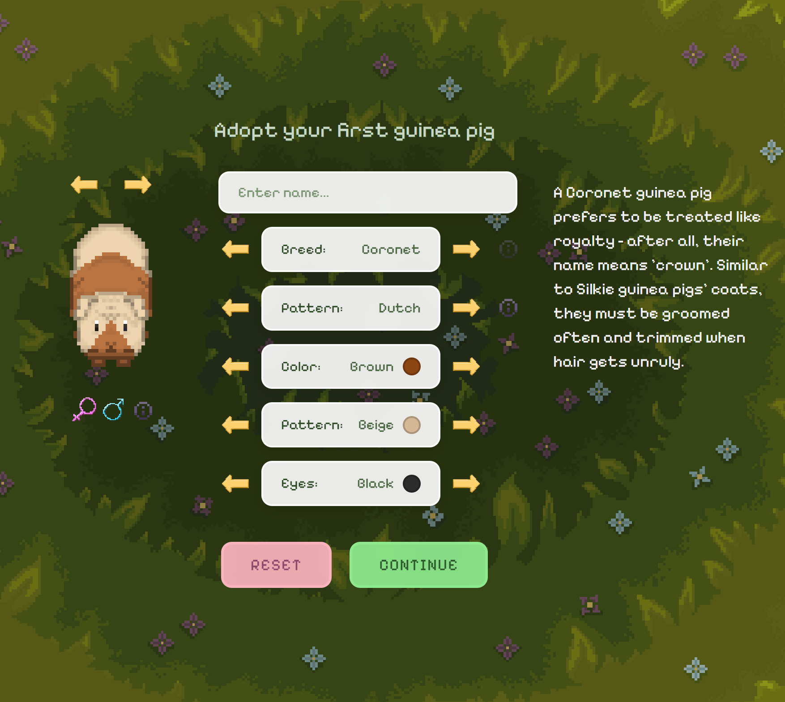
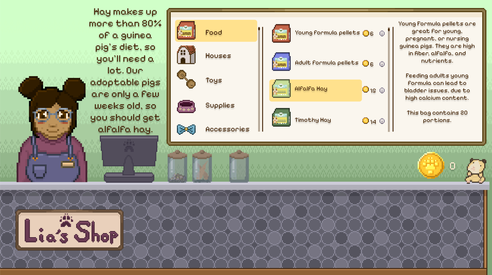
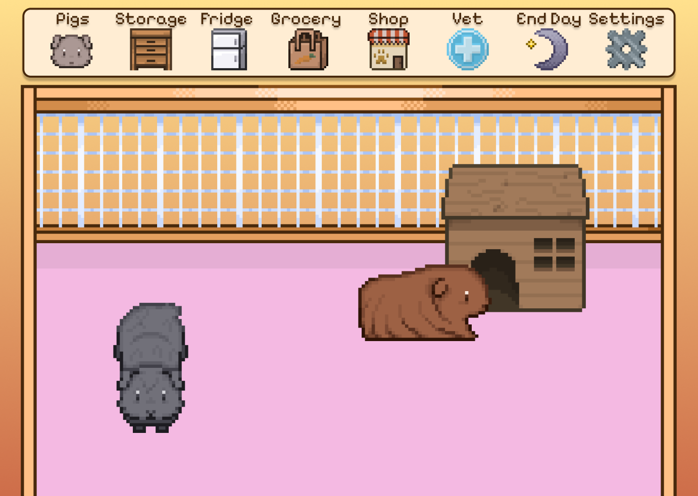

I've started to post clips of Guinea Garden on social media, but these videos don't really give a clear picture of the actual, current progress of the game. First, let me paint a clearer picture of what the game is about: Guinea Garden is very much in line with Tamagotchi-type games and the Petz/Nintendogs franchise. You adopt guinea pigs, feed them, brush them, pet them, and love them. I think a big difference between Guinea Garden and these other games is the game loop; Nintendogs and its similar titles get boring quickly because there's only so much walking, brushing, and petting you can do until the novelty wears off. When you have a real dog, even if it's old and lazy, they always keep you entertained and you never stop loving them. They give you side eye when you do something odd, they run around in circles for no good reason, they enjoy rubbing their butt on your brand new rug. The same applies to guinea pigs. They're vocal, have their own personalities, with their own likes and dislikes. Conceptually, I hope Guinea Garden will feel more personable, with guinea pigs having their own preferences, unique reactions to items, and unique behaviors specific to their breed and gender.
Additionally, the customization for each guinea pig is a bit more comprehensive than in typical Tamagotchi games. You can (currently) choose from 12 different breeds, each with 4 different patterns, colors for their body and pattern, eye color, gender, and give them their own name. You can currently only have 2 different colors of fur on one guinea pig, which I think may be disappointing to people who want to copy the look of their own pet, but once more of the game is done I will revisit making 3 colors possible.

Most importantly, there is an emphasis on education about pet care. I thought of making Guinea Garden in the first place because so many people get a guinea pig without really knowing what goes into it (myself included - I bought a solo guinea pig at PetCo when I was 16, and then only realized later that they absolutely require a companion. My first pig also had a lot of health problems when I first got him, owing to the fact that guinea pigs bred to be sold at major stores are not treated properly.) I know a large part of the player base will be people who already own guinea pigs, but I hope the game also reaches people who want a guinea pig and don't have one yet. Taking care of pigs isn't hard; I just think it's important you know what you're getting into before you get them on an impulse (like I did).

The way the educational aspect behaves in-game is with little (i) buttons next to absolutely everything: information about toys, materials, piggy behaviors, and so on. You earn coins for learning new information, as well as taking care of your pets properly. Items are priced according to real-life prices (more or less). You'll be able to save coins and unlock/buy items as the game goes on, with big milestones including being able to buy bigger cages and therefore able to adopt more guinea pigs.

To give you an idea of where the game currently is in development, here's what is currently possible step-by-step:
- A start screen with a "start", "info", and "settings" button.
- Pressing start brings you to Lia's shop screen, where you fill in a form with your name, an option to skip the tutorial, and your favorite color (affects the background color of the main game/cage screen, which can be changed later).
- A tutorial where Lia, the pet shop worker, talks you through all the items you need to buy for the piggies, including hay/pellets, houses, toys, various supplies, and a suitable cage.
- Pressing (i) for information on each item gives you coins which allows you to purchase the items.
- Lia then 'shows' you the available guinea pigs, taking you to the customizer screen to create 2 guinea pigs.
- The tutorial then guides you through how to add items to the cage (this part of the tutorial is unfinished).
- It is possible to click and drag piggies made in the customizer into the cage and watch them walk around (currently working on animations for every breed & pattern - currently the American breed, with or without the Dutch pattern can walk around animated).
And that's about it for now. Rather than tell you all the things I'm yet to add, I'll just broadly say that the real work for me starts now - the actual systems that effect guinea pig happiness, how happiness affects behavior, interactive play like brushing, etc, etc - will be implemented in the upcoming weeks.
All in all, this game is not very complicated. Most of the time spent will be making loads of sprites. I'm estimating that the game will be finished in winter this year, and the specific goal I've made for myself is December 2025. Without getting too much into my personal life, I'm currently able to work on this game any time I want as long as I want, but that could change. But the game will be finished, one way or another. I'll be posting updates to this blog weekly, and you can subscribe to the newsletter to stay updated if you'd like (you'll only ever get updates - no spam or promotional material.
By the way, this will be completely free to play on desktop on guineagarden.com (not up yet). I'm not sure how mobile play will work; Google Play has a one-time developer fee to upload apps, but Apple Store fees are $99 recurring yearly. So either the game will be playable on mobile web (unlikely, as touch controls for web games are janky), the app will only be available on Google Play, or you'll have to pay (something like $2 to download or include adds) to play on iPhone. Regardless, you can support me on Ko-Fi. Guinea Garden will always be free (or cheap on Apple), but I'd be grateful for donations to cover software/business/developer fees ☺
Thank you so much for reading ♡